Free software · Open source · runs locally on the CPU, no GPU, no network
MASCHERA masks and anonymises personal data
in Swiss documentsIt does so on your device, always locally,
with no network connection!
You have a letter, an email thread or a PDF and want to ask an AI tool about it. The names, AHV numbers and addresses should stay behind, though.
Before
After
You hand the masked text to the service of your choice. You paste the answer back, and MASCHERA puts the real values in again.
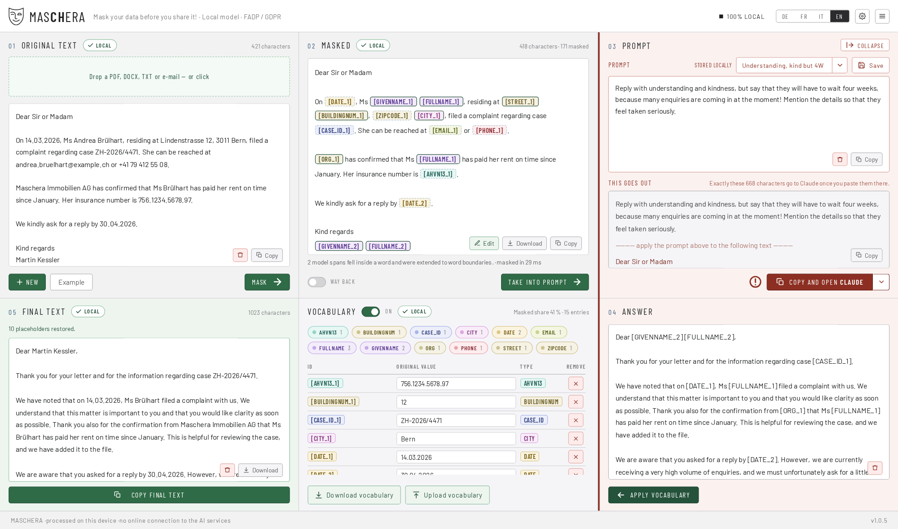
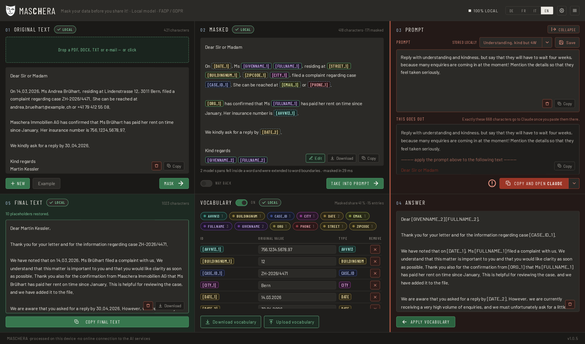
Four features
What defines the tool
It runs on your device
All detection happens locally. While it runs, nothing is fetched and nothing is sent: no fonts, no icons, no analytics. An endpoint that ships text out does not exist and will not exist. The way out always leads through your clipboard. The one exception is yours to choose: “Check for updates” in the menu asks GitHub once for the newest version number.
It writes nothing down
Only your own settings are stored, meaning rules, templates and preferences. Even those are stored only on explicit command. No document content, no dictionary, no log.
Reversible, and that is the point
You mask, you ask, you paste the answer back: MASCHERA puts the real values in again. That is why this is pseudonymisation and not anonymisation. As long as the dictionary exists the process is reversible, and under the revised FADP the data remain personal data.
Built for Swiss documents
It detects the AHV number, UID, IBAN, QR reference, building and dwelling identifier, permit category, number plate and ZSR number, each with its checksum.
45 data types in all. Four languages: German, French, Italian and English.
The process
Five steps
Open or drag in a document, or paste text
Read: .pdf, .docx, .eml, .msg (Outlook), .mbox, .txt, .md, .csv, .json. Or drag straight from your mail program.
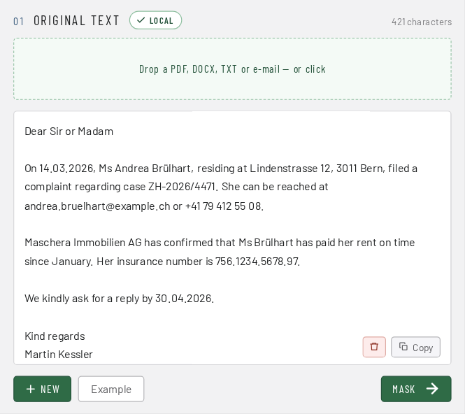
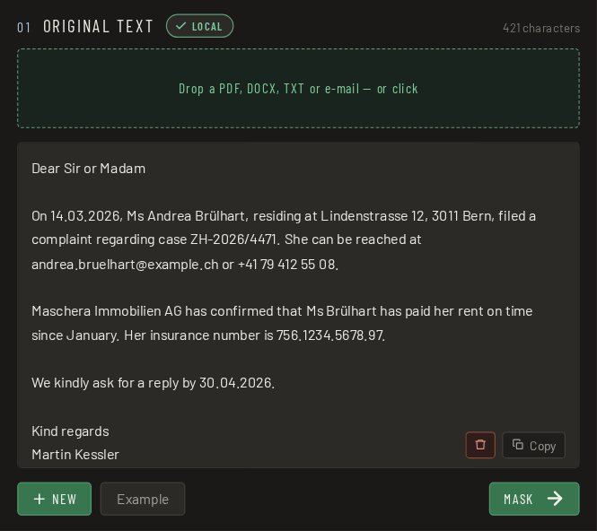
Mask
Every finding is shown in colour, with its origin: checksum, pattern or model.
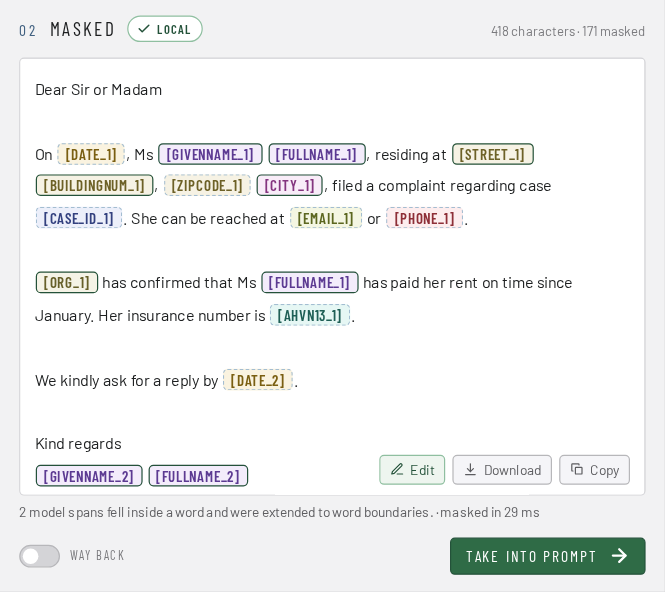
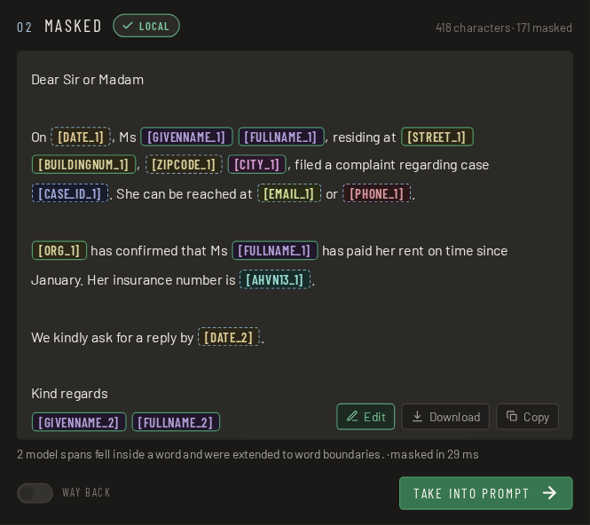
Check
You see what was replaced before the text goes anywhere.
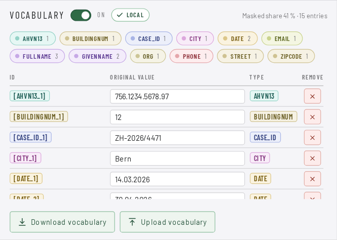
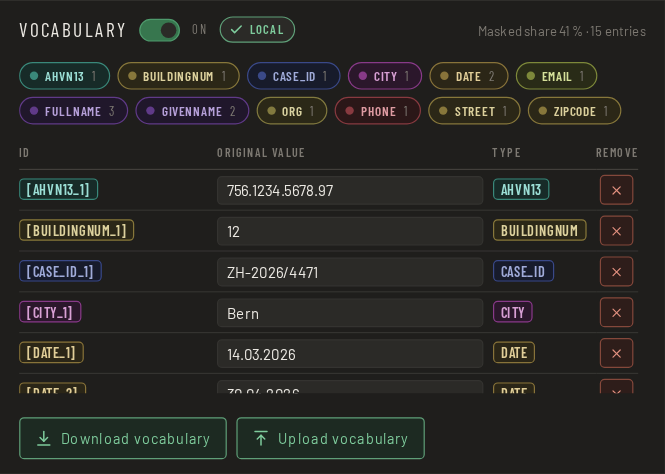
Copy and paste
Into the service of your choice, by hand. The tool sends nothing itself.
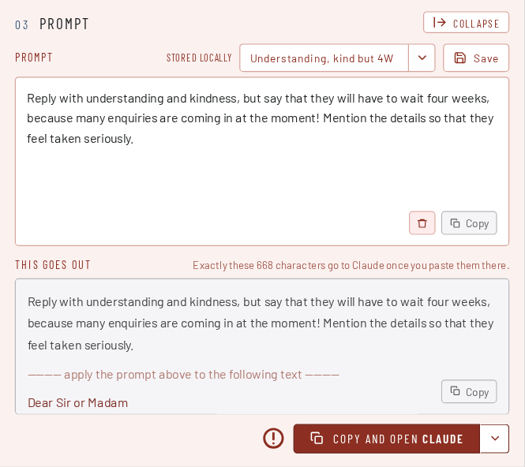
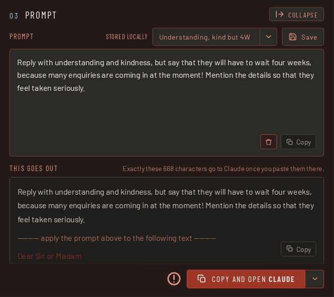
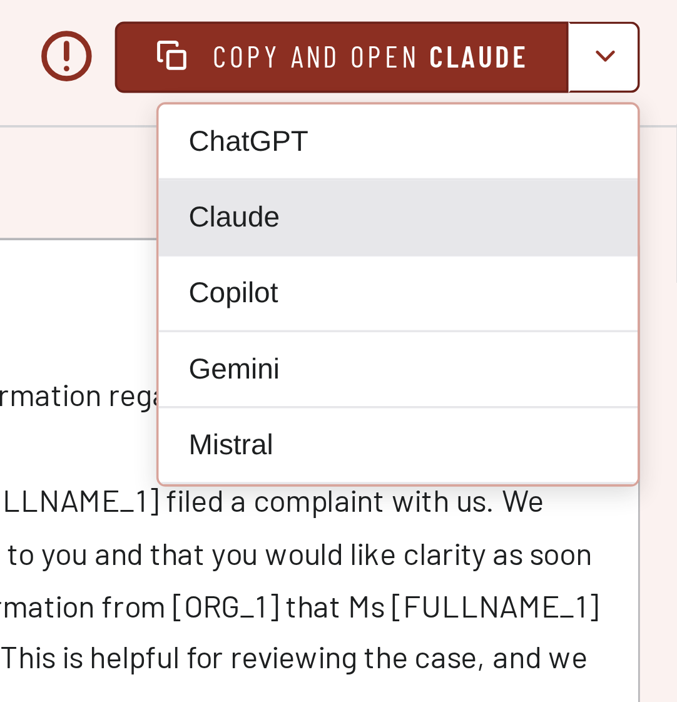
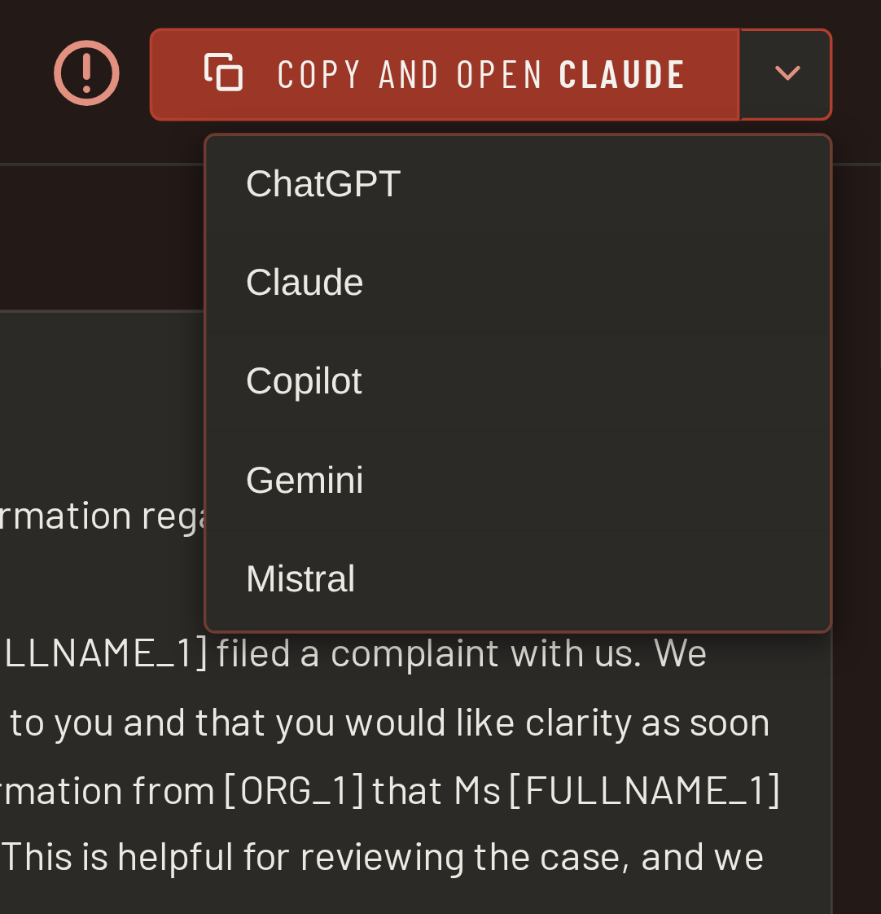
Paste the answer back
The real values come back in.
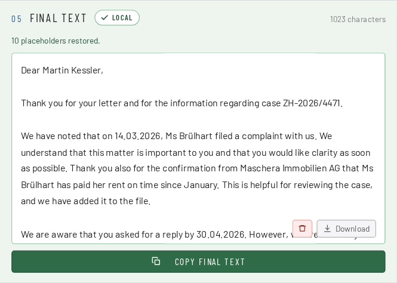
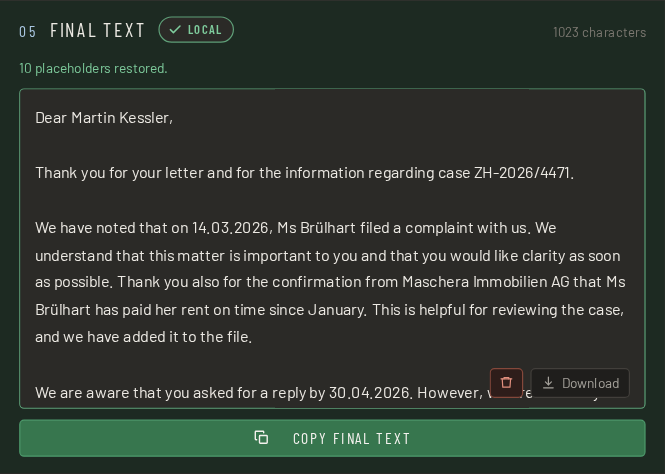
An empty result is not an all-clear. A scanned PDF without a text layer yields an error with a reason, not “no personal data found”. A tool that gives the all-clear there is more dangerous than one that says nothing at all.
Three stages, not just “an AI”
| Stage | What it does |
|---|---|
| 1 · Checksums | AHV number, UID, IBAN, QR reference, credit card, GLN. Valid checksum → mask, even if the model stays silent. Invalid → discard, even if it fires. |
| 2 · Patterns with context anchors | Phone number, postcode, number plate, permit category, case number and more. They are detected by anchor words in four languages and take no precedence over the model. Your own rules come on top: words and patterns you define yourself. They run like the built-in patterns. For example an internal case no. or an internal file no. |
| 3 · Language model | Names, addresses, occupations, organisations and dates, meaning everything without a pattern. |
The model is 1.2 GB and was trained on synthetic data. It has never seen a real document. Technical details on the model.
Three things that make everyday work easier
Built for daily work
Fits the window and waits in the background
When the window is narrow, about half the screen or on a small laptop, MASCHERA stacks the six areas in the order you work: original, masked, vocabulary, prompt, answer, final text. On Windows and Linux the X does not close the window; MASCHERA moves to an icon next to the clock. The model stays loaded, and for the next document the window is back with one click, without waiting.
On GNOME the icon only appears with the “AppIndicator” extension. Without it, the X closes as usual.
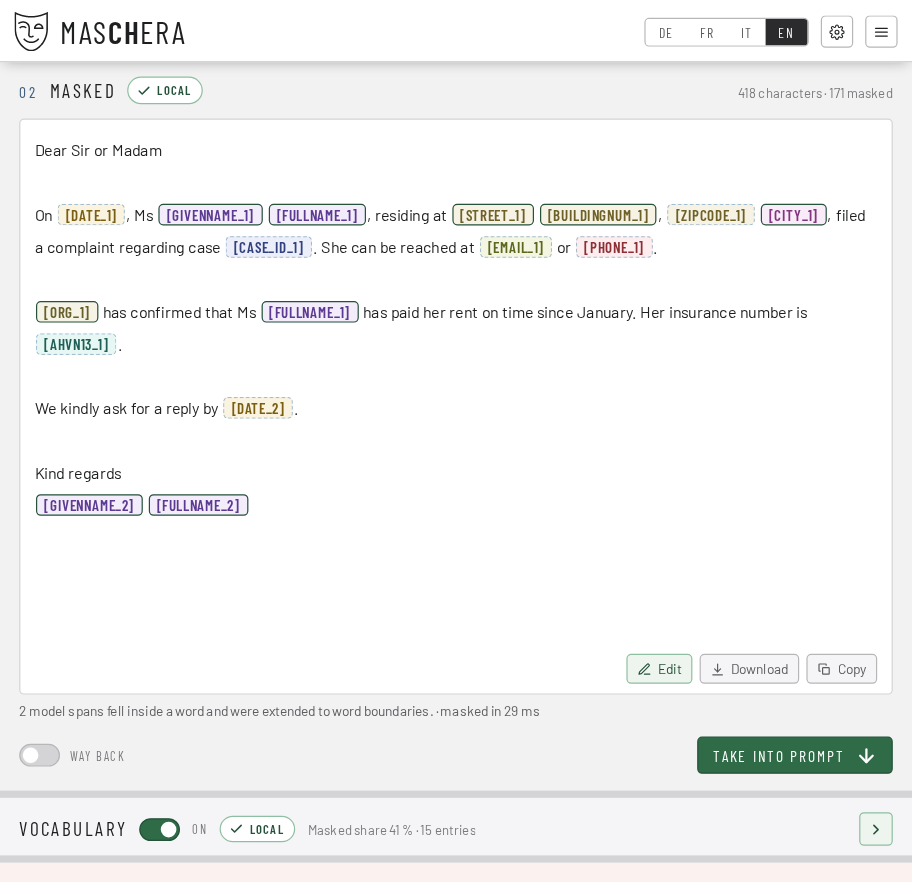
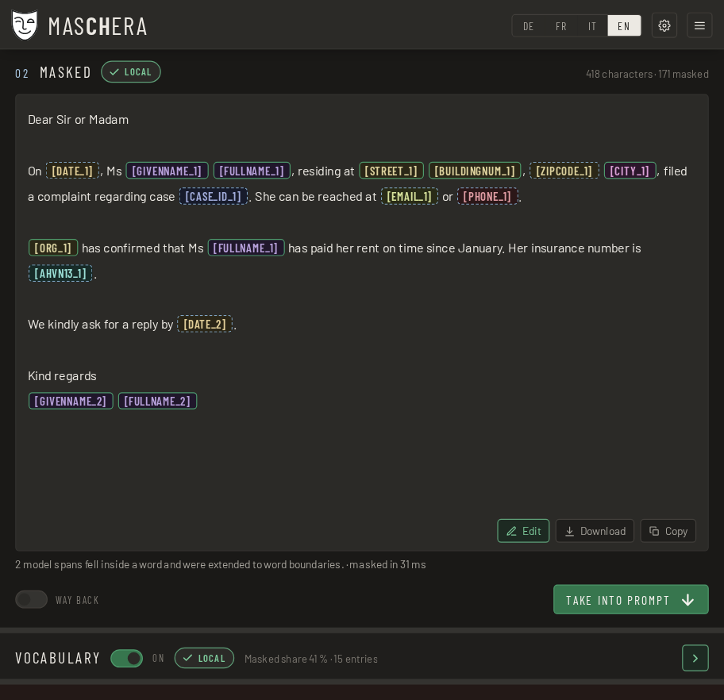
Masked too much? One click undoes it
When in doubt, MASCHERA masks one word too many rather than one too few. In a long document that can include a company name or a place you want to keep. In the text: a right-click on a placeholder shows the original value and where the finding came from; there you remove the mask or pick another category. In the vocabulary: every row has a red ×. One click takes the placeholder back in the whole document: if [ORG_1] appears five times, the company name is readable everywhere again.
It works the other way round too: select a word, pick a category with a right-click, and it is masked everywhere. Whatever should always stay in plain text, such as place names, you set once in the settings.
Just drag it in, e-mails too
PDF, Word (.docx), Outlook messages (.msg), e-mails (.eml), whole mailboxes (.mbox) and text files can be dragged straight onto the window. MASCHERA reads them and shows the text; masking only happens when you click. From the mail program it often works directly: drag a message from Thunderbird or from Outlook on Windows, done. Apple Mail does not hand over a file when dragging: drag the message to the desktop first, then into the window. MASCHERA tells you so as well.
A scanned PDF without a text layer gives a clear message, not “nothing found”.
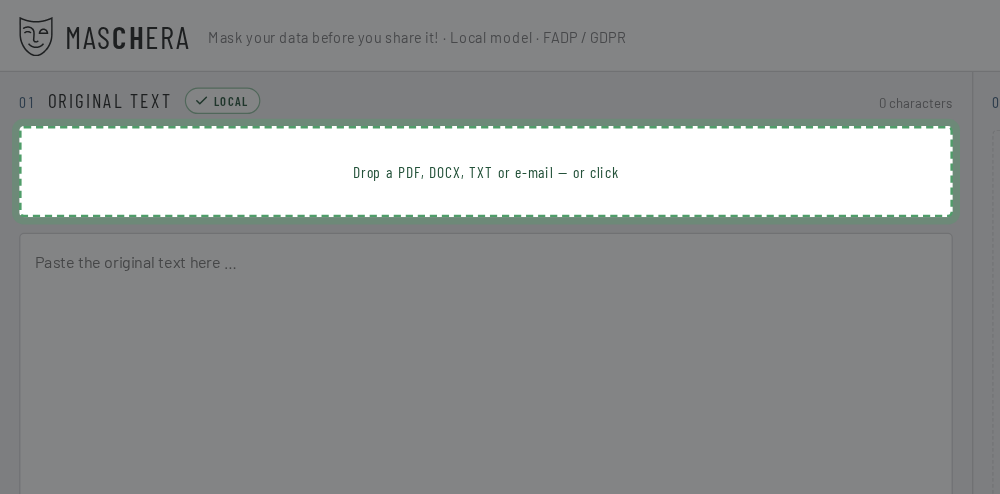
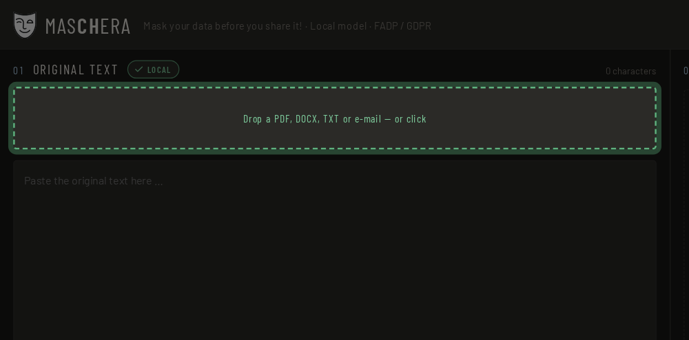
The most important section
MASCHERA takes the work off your hands, not the responsibility.
No tool finds every piece of personal data. Look at the masked text before you pass it on. That is why MASCHERA shows every finding in colour and with its origin.
What “origin” means
Every finding shows where it came from: a verified number, a pattern with context, or the language model. An AHV number with a valid checksum is certainly right; a guess from the model deserves a second look.
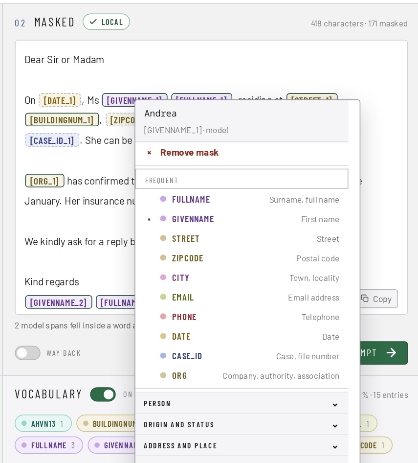
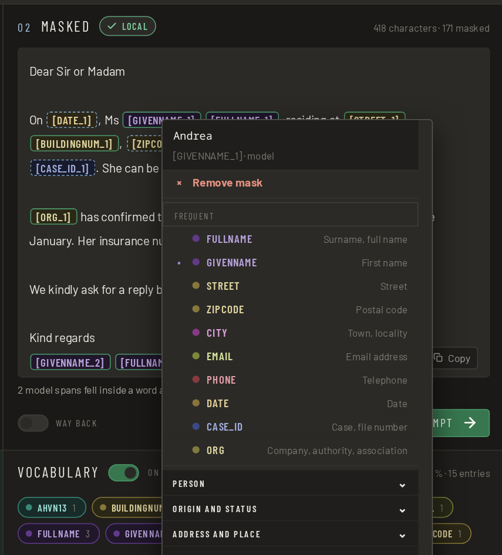
Right-click a finding to change its marking: choose a different data type or remove the mask.
What you can do if something is missing
Five options, all present in the application.
| Fix it by hand | The masked text is editable. Placeholders such as [FULLNAME_1] stay put and are converted back at the end. |
| Your own rules | Your own words and patterns, masked in addition. A project name, an internal abbreviation, a nickname. |
| Plain-text types | You can leave individual data types in plain text for good. They are detected, but not replaced. If you want to keep place names, you set that once. |
| Convert back | Paste the service’s answer in, and the real values come back. |
| Anonymise for good | Mask without a dictionary. The process is then no longer reversible, and the application tells you so beforehand. |
MASCHERA can do both: reversible for working with an AI service, irreversible for text that leaves the house as it is.
Download
Which file do I take?
No sign-up form, no email address, no newsletter. The file is there, you download it, done.
Linux
AppImage: a single executable file, the model is included. Download, make executable and start. Nothing is installed.
Flatpak: The model (1.3 GB) is downloaded from Hugging Face the first time the application starts.
Flatpak0,3 GBWindows
Installer for Windows 11, 64-bit. Installs without administrator rights, the model is included.
Windows1,4 GBServer
Docker, for running as a service. The interface opens in the browser. The model is included. The server keeps nothing: no document, no dictionary, no log. Once the answer is out, everything is forgotten.
Docker4,2 GBmacOS
Disk image for Macs with Apple silicon (M1 or newer). The model is included. The app is not signed: after dragging it into “Applications”, enter xattr -dr com.apple.quarantine /Applications/MASCHERA.app once in “Terminal”, otherwise it will not open.
All files are in the releases on GitHub, together with SHA256SUMS for verification.
The note about the model
The model is 1.2 GB. The AppImage, the Windows installer and the macOS image carry it. The Flatpak fetches it once on first start. It comes from a named source, is verified with a checksum and is only fetched after you have agreed. No wifi at hand? Decline and fetch it another time. After that, everything works offline alike.
AppImage or Flatpak?
AppImage is a single file: download it, make it executable and start it. Nothing is installed. Flatpak integrates with the package manager and updates along with it.
Both bring their own libraries and are therefore independent of your distribution’s release. On Arch systems Flatpak runs perfectly well, which is why there is no separate Arch package.
Frequently asked questions
Questions and answers
How do I mask or anonymise personal data in a document before asking ChatGPT or Claude?
Open the document in MASCHERA or paste the text, then click “Mask”. Names, AHV numbers, addresses and other personal data are replaced with placeholders such as [FULLNAME_1]. You check the result, copy it into the service of your choice and paste the answer back: MASCHERA puts the real values in again.
Does MASCHERA need a graphics card or an internet connection?
No. Detection runs on an ordinary CPU, with no GPU. While it runs, nothing is downloaded and nothing is sent, unless you click “Check for updates”. The AppImage, the Windows installer and the macOS image carry the model; the Flatpak fetches it once on first start, after you agree.
Which Swiss identifiers does MASCHERA recognise?
The AHV number, UID, IBAN, QR reference, building and dwelling identifiers (EGID/EWID), permit category, number plate and ZSR number, each with its checksum where one exists. In all, 45 types of personal data, in German, French, Italian and English.
Is this anonymisation in the sense of data protection law?
No, and that is deliberate. As long as the dictionary exists, the process can be reversed; under the Swiss FADP (revDSG) the data then remain personal data. That is pseudonymisation. For text that is passed on for good, you mask without a dictionary: then the process can no longer be reversed.
Which files can MASCHERA read?
PDF with a text layer, Word (DOCX), emails (EML, MSG from Outlook, MBOX), TXT, MD, CSV and JSON. A scanned PDF without a text layer returns an error with a reason, not “no personal data found”.
How does MASCHERA differ from Microsoft Presidio?
Presidio is an open framework for developers that detects and masks personal data. It knows identifiers from more than twenty countries, but none from Switzerland; you would have to add them yourself. MASCHERA is a ready-to-use application for Swiss documents, with an interface for checking and restoring the values.
Can I also anonymise a document for good?
Yes. By default MASCHERA masks reversibly: with the dictionary, the real values come back. For text that is passed on or published, you mask without a dictionary; then the process can no longer be reversed. Still check whether indirect clues to a person remain in the text.
| MASCHERA | Microsoft Presidio | |
|---|---|---|
| Built for | Swiss documents | General text, extensible |
| Swiss identifiers | Built in, with checksum | None in the list of supported types |
| Form | Application for Windows, macOS, Linux and Docker | Python library and service for your own programs |
| Runs locally | Yes | Yes |
| Licence | MIT (source code) | MIT |
As of October 2026, according to the list of supported types in the Presidio documentation.
Where everything else lives
The technical part is kept up to date there
How well the model measures, how it was trained, how the program is built: all of that lives there and is kept current there.
Legal notice
Responsible
| Name | Rodolfo Semprevivo |
|---|---|
| Country | Switzerland |
| Contact | via GitHub Issues |
| Web | www.maschera.ch |
Purpose
MASCHERA is a tool for masking personal data locally in Swiss documents. It is provided as open software.
This website
This website is hosted by Hostpoint AG in Switzerland. When you visit it, Hostpoint processes technically necessary data such as your IP address in its server logs; details are in Hostpoint’s privacy statement. The website itself sets no cookies, collects no statistics and loads nothing from third-party servers. The download files are hosted on GitHub (GitHub, Inc., USA).
The application
MASCHERA processes your documents exclusively on your own device. No content is transmitted to the publisher or to third parties, no usage data is collected and no cookies are set. The publisher therefore gains no knowledge of the processed data and is not its controller within the meaning of the FADP. Responsibility for the data remains yours. As soon as you paste a masked text into an AI tool, that provider’s terms apply.
Liability
MASCHERA is provided without warranty. Personal data is detected automatically and not exhaustively: it can miss details and masks too much when in doubt. Checking the masked text before passing it on is up to you. Liability for damages arising from use is excluded to the extent permitted by law. The operators of linked sites are responsible for their content.
Licence
Source code MIT, shipped packages AGPL-3.0, model MIT. The source code and the third-party works used, with their licences, are on GitHub.